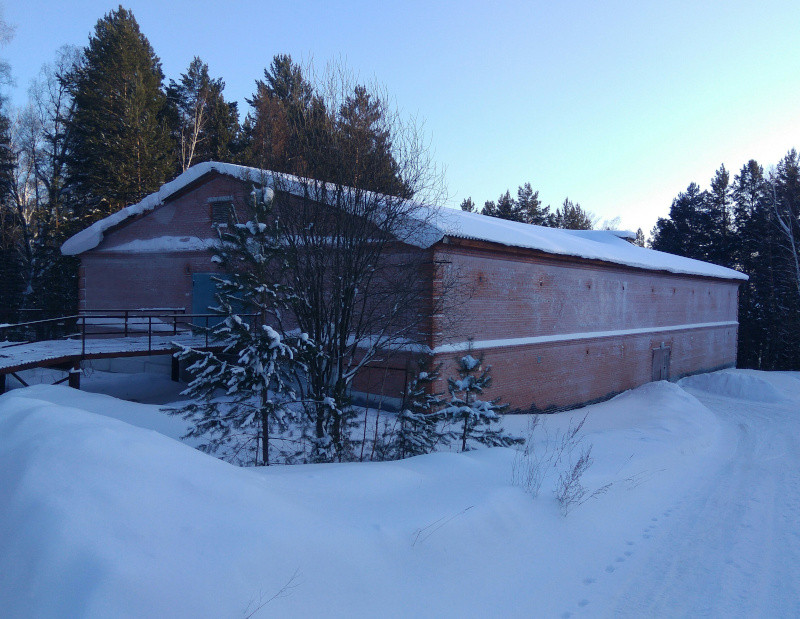

Раз в три месяца специальный человек обзванивает всех и собирает платежи. Прошло уже полгода, а автору этих строк никто ни разу не позвонил. Кстати, тариф на электроэнергию полный — в отличие от тарифа для квартир с электрическими плитами.
Да, снег чистят владельцы переднеприводных автомобилей. Так, заехать в горку между первым и вторым этажом после снегопада не насилуя автомобиль достаточно сложно (субъективное мнение). Лопата станет вашим лучшим помощником.
Это зависит от положения бокса в линейке. В данный момент на крыше не установлены водосточные желоба, и вся вода в дождь течёт сквозь просевшую отмостку прямо под гараж. Внутри бокса на бетонных блоках внешней стены, находящихся ниже уровня земли, образуется плесень. В межсезонье на полу в боксе могут образовываться небольшие лужи, но, впрочем, высыхают они быстро.
В тёплое время года периодически включают вентиляторы принудительной вытяжки. На первом этаже для пущей вентиляции проезд закрывают решёткой вместо сплошных ворот.
В общем-то отличное местечко, и недалеко от жилья. Строение и прилегающие террритории, однако, постепенно ветшают и требуют внимания, но заняться проблемами как будто бы и некому.
Если вы знаете другие интересные факты, имеете вопросы или просто хотите пообщаться, присоединяйтесь ">к нашей группе в WhatsApp, там вам обязательно ответят.